Aujourd'hui, je vais vous parler d'une technique d'automatisation dont je vois à peine quelqu'un parler sur YouTube et je ne l'ai d'ailleurs jamais abordée sur cette chaîne non plus. C'est une technique appelée la parallélisation, et elle vous permet d'exécuter des éléments en même temps afin que votre flux de travail se termine beaucoup plus rapidement et soit beaucoup plus efficace. Comprendre la parallélisation et les sous-flux de travail va vraiment faire passer votre niveau d'automatisation à la vitesse supérieure, alors dans cette vidéo, nous allons parler de ce que c'est, nous allons voir quelques exemples de la façon dont vous pouvez réellement configurer cela, nous parlerons des inconvénients et des considérations, et nous allons également parler du pourquoi et du quand vous voudriez configurer un sous-flux de travail, car la parallélisation n'est qu'une des nombreuses raisons pour lesquelles vous pourriez vouloir diviser un grand flux de travail en plusieurs sous-flux de travail. Donc je ne veux pas perdre de temps, je vais juste lancer un
Interface & Outils : Interface de création de workflow (type Make ou n8n)
Contenu textuel & Code : Diagramme d'automatisation avec un nœud déclencheur, un nœud de récupération de données et un sous-workflow.
Action / Démonstration : Exécution d'un workflow d'automatisation montrant le succès du traitement des éléments.
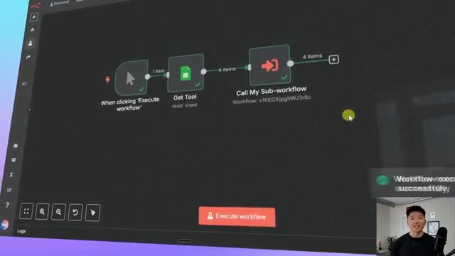
🔍 Agrandirpetite démonstration visuelle pour que vous puissiez voir à quel point c'est lent quand on exécute quelque chose de séquentiel plutôt qu'en parallèle. Donc en ce moment, nous faisons des recherches sur Perplexity pour quatre outils différents qui sont stockés dans une feuille Google Sheet. C'est allé assez vite parce que l'API de Perplexity peut en fait faire cela en parallèle, mais maintenant cet agent IA va traiter chaque outil et chaque recherche un par un.
Interface & Outils : Interface web de workflow / automatisation (style Langflow ou similaire).
Contenu textuel & Code : Nœuds connectés : 'When clicking Execute workflow', 'Get Tool' (Google Sheet), 'Perplexity Research', 'Tool Analysis Agent' et 'Update Tool'.
Action / Démonstration : Exécution d'un workflow d'automatisation avec des recherches sélectives ou parallèles sur des données de feuilles de calcul.
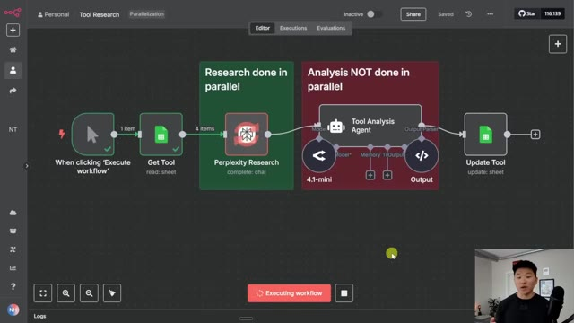
🔍 AgrandirDonc en ce moment, ça travaille sur le premier outil. Comme vous pouvez le voir, ça vient de finir le premier et maintenant ça passe au deuxième. Et on peut le voir parce que si je déplace ça vers le bas, vous pouvez voir que ça n'a fait qu'un seul élément. Maintenant, ça va faire le deuxième, maintenant ça va faire le troisième, et ainsi de suite. Mais si nous avions fait tourner cet agent en parallèle, cela aurait été terminé il y a déjà environ 20 secondes.
Interface & Outils : Interface web de type outil d'automatisation ou de workflow basé sur des nœuds.
Contenu textuel & Code : Nœuds de workflow étiquetés "Perplexity Research", "Tool Analysis Agent", et "Update Tool", avec des indicateurs de statut et de traitement de données (4 items).
Action / Démonstration : Exécution séquentielle ou traitement d'éléments par les différents nœuds du workflow d'automatisation.
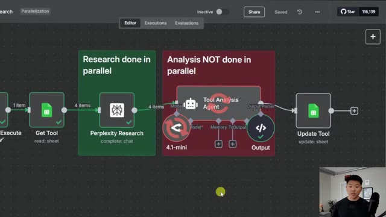
🔍 AgrandirDonc voilà, ça vient enfin de se terminer et ça n'a pris que quatre éléments. Imaginez si vous en aviez 10 ou 20. Donc nous allons nous plonger directement dans ce flux de travail ici et je vais transformer ceci en un flux de travail à exécution parallèle. Mais avant de faire ça, allons rapidement sur Excalidraw pour que je puisse vous expliquer ce qu'est réellement la parallélisation. Donc ce qu'est la parallélisation, à part être difficile à prononcer, c'est que vous exécutez plusieurs tâches en même temps au lieu de les faire les unes après les autres.
Interface & Outils : Interface graphique de gestion de flux de travail (workflow automation) et outil de présentation de type tableau blanc / slides.
Contenu textuel & Code : Diagramme de workflow avec des blocs connectés et texte explicatif sur la parallélisation.
Action / Démonstration : Présentation et explication du concept de parallélisation et visualisation du flux de travail actuel avant modification.
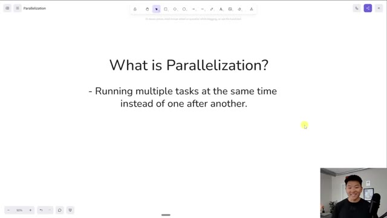
🔍 AgrandirEt cela ne se produit vraiment pas de manière native au sein de NNN. Nous avons beaucoup de chance ici parce que l'API de Perplexity prend les quatre éléments et fait essentiellement, sur leur serveur, des recherches sur les quatre en même temps. C'est donc super. Mais ce n'est pas le cas de toutes les API. Nous venons pratiquement de découvrir que Perplexity le fait. Mais comme vous pouvez le voir lorsque nous appelons le modèle de chat, il a traité ceux-ci un par un et c'était très lent.
Interface & Outils : Interface web de création de workflow (type outil d'automatisation visuel).
Contenu textuel & Code : Nœuds de workflow : 'When clicking Execute workflow', 'Get Tool', 'Perplexity Research' (dans un cadre vert 'Research done in parallel'), 'Tool Analysis Agent' (dans un cadre rouge 'Analysis NOT done in parallel'), '4.1-mini', 'Output', et 'Update Tool'.
Action / Démonstration : Visualisation et explication d'un workflow automatisé combinant recherche en parallèle via l'API Perplexity et analyse par agent.
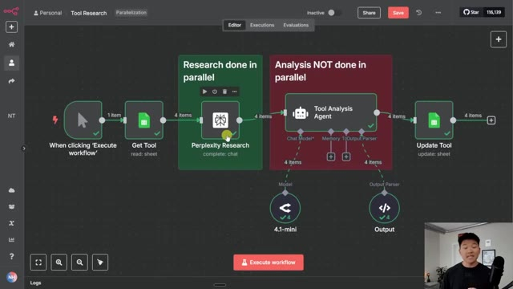
🔍 AgrandirEt au cas où ce ne serait pas encore tout à fait clair, imaginez que nous voulions cuire ces trois dindes et que chacune prenne 30 minutes à cuire, mais que nous n'ayons qu'un seul four à disposition. Donc, sans parallélisation, nous cuisons la première, puis nous cuisons la deuxième, puis nous cuisons la troisième, et cela prendrait un total de 90 minutes. Mais si nous sommes capables d'utiliser la parallélisation, ce qui signifie que nous aurions trois fours qui peuvent tous fonctionner en même temps, le temps de cuisson total de ces trois dindes ne serait que de 30 minutes et ce sera tout simplement beaucoup plus efficace. J'espère donc que cette démonstration vous montre qu'il est fondamentalement évident dans certains cas d'utiliser la parallélisation. Revenons donc dans NNN et je vais simplement vous montrer à quel point c'est facile de
Interface & Outils : Logiciel de présentation ou tableau blanc numérique (canvas).
Contenu textuel & Code : Texte 'Without parallelization' et 'With parallelization', images de fours et de dindes avec des durées.
Action / Démonstration : Présentation visuelle et analogie de la parallélisation informatique à l'aide de dindes et de fours.
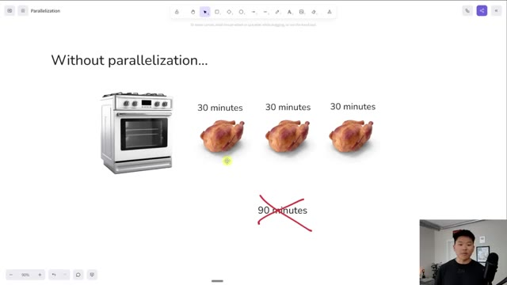
🔍 Agrandir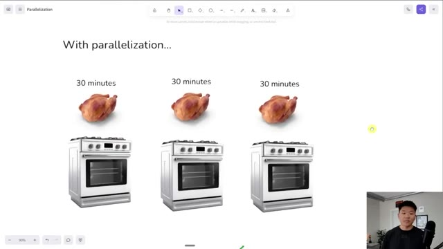
🔍 Agrandir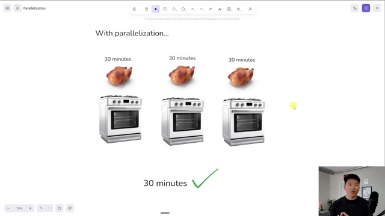
🔍 Agrandirconfigurer ceci. Donc, dans une mise à jour récente de n8n, ils ont ajouté cette fonctionnalité sympa où vous pouvez essentiellement sélectionner des nœuds, faire un clic droit, puis dire : je veux convertir ces sept nœuds en sous-flux de travail. Donc, si vous ne voyez pas cette option, essayez simplement de mettre à jour votre instance de n8n et vous devriez alors la voir. Et ce qui se passe, c'est que lorsque je clique sur ce bouton, cela va fondamentalement me demander de nommer mon flux de travail. Je vais juste le garder comme "mon sous-flux de travail" pour l'instant.
Interface & Outils : n8n (éditeur de flux de travail)
Contenu textuel & Code : Diagramme de workflow avec des nœuds pour Google Sheets, Perplexity Research, un agent d'analyse d'outils et des modèles associés.
Action / Démonstration : Visualisation et configuration d'un flux de travail automatisé dans n8n.
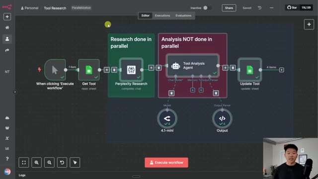
🔍 AgrandirEt quand je clique sur confirmer, ça transforme tout ça en un sous-flux de travail et il est déjà relié juste ici et appelé par celui-ci. Et donc si je clique là-dedans, vous pouvez voir que ça transmet le nom de l'outil, ce qui est plutôt cool, c'est déjà configuré. Et je peux cliquer sur ce bouton juste ici, qui va fondamentalement nous amener à cette sous-exécution. Et nous devrions voir que tout est toujours configuré et devrait fonctionner tout à fait normalement pour nous.
Interface & Outils : Éditeur de workflow visuel de type n8n ou similaire.
Contenu textuel & Code : Blocs fonctionnels : « When clicking 'Execute workflow' », « Get Tool » (read: sheet), et « Call My Sub-workflow ».
Action / Démonstration : Le présentateur explique la transformation d'un ensemble de nœuds en un sous-flux de travail interconnecté.
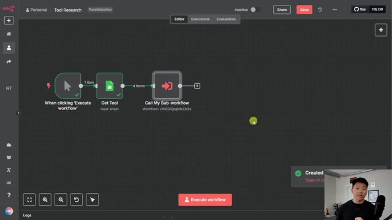
🔍 AgrandirMais nous n'avons pas encore terminé, car tout ce que cela fait jusqu'à présent, c'est de transmettre ces quatre outils, qui seraient Fireflies, Excalibur, Loom et Napkin, dans le sous-flux de travail. Et ensuite, le sous-flux de travail ici capturerait les quatre et ferait exactement la même chose que nous venons de voir. Donc, ce que nous avons fait, c'est que nous avons transformé ceci en un sous-flux de travail, ce qui est super, mais nous n'avons pas encore de parallélisation, car il exécuterait toujours les quatre à travers ceci et il irait un, deux, trois, quatre. Donc, pour faire en sorte que cela s'exécute réellement en parallèle, nous voulons que les quatre éléments s'exécutent comme quatre exécutions individuelles et nous voulons qu'ils s'exécutent tous en même temps. Donc, ce que je dois faire, c'est cliquer sur le nœud. Et la première chose que je vais faire est plutôt
Interface & Outils : Interface web d'automatisation de type n8n ou similaire.
Contenu textuel & Code : Nœuds de workflow : déclencheur, nœud de lecture de données 'Get Tool' transmettant 4 éléments, et nœud d'appel de sous-flux de travail 'Call My Sub-workflow'.
Action / Démonstration : Le présentateur explique la configuration du flux principal qui transmet les quatre outils vers un sous-flux de travail.
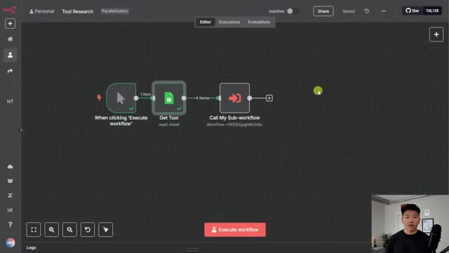
🔍 AgrandirPlutôt que de s'exécuter une seule fois avec tous les éléments, je vais choisir de s'exécuter une fois pour chaque élément, ce qui signifie qu'il va appeler le sous-flux de travail individuellement pour chaque élément. Et ensuite, une fois que nous avons modifié cela, nous devons faire une chose délicate où nous ajoutons une option et nous voulons désactiver l'attente de la fin du sous-flux de travail. Si nous laissions cette option cochée, cela enverrait essentiellement le premier, puis attendrait que celui-ci se termine, puis enverrait le deuxième et attendrait que celui-ci se termine.
Interface & Outils : n8n (interface de workflow d'automatisation)
Contenu textuel & Code : Paramètres du nœud avec Source (Database), Workflow (My Sub-workflow), Workflow Inputs (Tool : Fireflies.ai), et le menu déroulant Mode affichant les options 'Run once with all items' et 'Run once for each item'.
Action / Démonstration : Sélection de l'option de configuration pour exécuter le sous-flux de travail pour chaque élément individuellement.
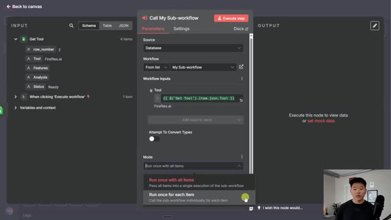
🔍 AgrandirDonc ce serait la même chose que de faire essentiellement une boucle à travers notre liste d'éléments. Et ce serait encore plus lent que la façon dont nous le faisons actuellement en envoyant les quatre éléments là-bas en même temps. Donc maintenant que nous avons configuré cela correctement, je vais l'exécuter une fois de plus. Nous allons aller dans le sous-flux de travail et cliquer sur les exécutions, et vous allez voir que les quatre éléments s'exécutent exactement en même temps et ils vont tous se terminer beaucoup plus rapidement que la façon dont nous l'avons fait précédemment.
Interface & Outils : Éditeur de workflow de type n8n
Contenu textuel & Code : Paramètres du nœud avec Source réglée sur Database, Workflow réglé sur « My Sub-workflow », Workflow Inputs avec l'expression `{{ $('Get Tool').item.json.Tool }}`, et Mode configuré sur « Run once for each item ».
Action / Démonstration : Configuration des paramètres d'appel d'un sous-workflow dans l'éditeur d'automatisation.
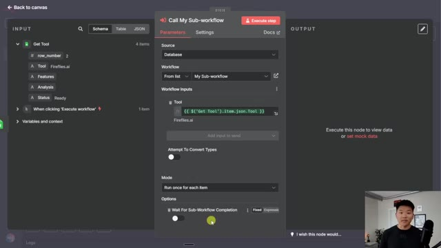
🔍 AgrandirDonc nous allons lancer le workflow. Il va récupérer nos outils. Il va les transmettre au sous-workflow juste ici. Je vais cliquer sur le sous-workflow et cliquer sur les exécutions, et vous pouvez voir juste ici, nous avons maintenant les quatre qui s'exécutent complètement en parallèle et ils vont tous se terminer beaucoup plus rapidement que si l'agent IA faisait une analyse sur chacun d'eux individuellement. Donc vous pouvez voir que ces quatre-là ont tous terminé et cela a pris un total de 22 secondes.
Interface & Outils : Éditeur de workflow graphique (type n8n ou plateforme similaire).
Contenu textuel & Code : Nœuds connectés : 'Start', 'Perplexity Research', 'Tool Analysis Agent' (avec modèles 4.1-mini et Output), et 'Update Tool'.
Action / Démonstration : Visualisation du sous-workflow d'automatisation avant son exécution.
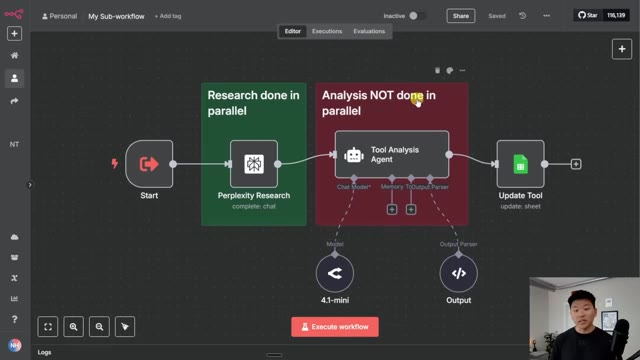
🔍 AgrandirVous pouvez aller dans notre feuille Google et voir que nous avons maintenant nos fonctionnalités et notre analyse sur chacun de ces quatre outils. Et juste pour vous montrer que c'est vraiment plus rapide, si je retourne dans le flux de travail principal et que nous cliquons sur les exécutions, et que nous cliquons sur l'une de celles qui s'est exécutée lorsqu'elle les faisait tourner toutes les quatre en même temps, ce qui, je crois, était celle-ci, cela a pris 51 secondes. Nous avons donc réduit le temps de traitement de moitié, voire plus de moitié.
Interface & Outils : n8n (outil d'automatisation de workflows)
Contenu textuel & Code : Historique des exécutions (ex: Jul 8, 12:28:22 Succeeded in 16.219s) et diagramme de workflow comprenant des nœuds pour "Perplexity Research", "Tool Analysis Agent" et "Update Tool".
Action / Démonstration : Consultation de l'historique des exécutions et du statut des différentes étapes du flux de travail automatisé.
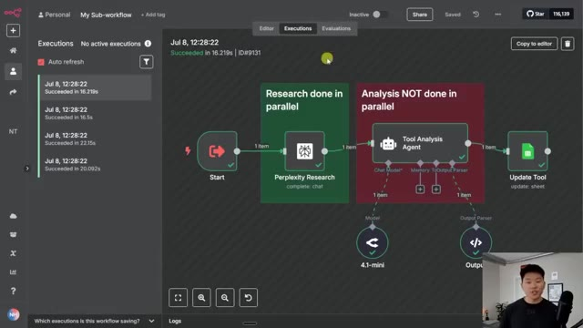
🔍 AgrandirEt je sais que ça ne fait pas une énorme différence quand nous n'exécutons que quatre éléments, mais pensez-y si vous commenciez à en exécuter 10, 20, 30, vous allez gagner tellement de temps dans cette automatisation. Et rappelez-vous juste dans le nœud où vous appelez ce sous-flux de travail, pour que les choses s'exécutent en parallèle, vous devez le faire s'exécuter une fois pour chaque élément et vous devez désactiver attendre la fin du sous-flux de travail. D'accord, c'était donc si simple de voir comment nous pouvons configurer des exécutions parallèles.
Interface & Outils : n8n (Interface de conception de workflows d'automatisation)
Contenu textuel & Code : Nœuds de workflow, paramètres de sous-flux, entrées JSON et tableau de données avec les outils (Fireflies.ai, Excalidraw, Loom, Napkin.ai).
Action / Démonstration : Navigation dans l'historique des exécutions et configuration des paramètres d'appel d'un sous-flux de travail pour le traitement en parallèle.
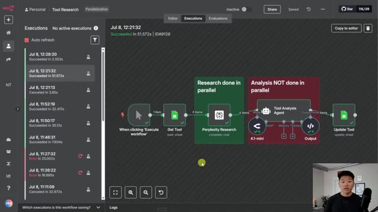
🔍 Agrandir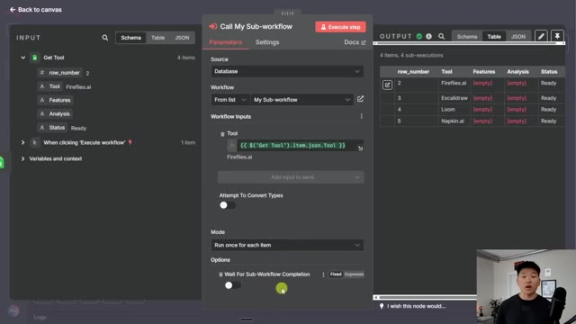
🔍 AgrandirMaintenant, parlons rapidement des inconvénients et des considérations liés à l'utilisation de la parallélisation. Donc, au début, ces quatre éléments me sont venus à l'esprit, qui étaient les limites de ressources. Donc, par exemple, dans notre flux, où nous faisons appel à Perplexity pour faire des recherches, nous pouvons avoir une limite où vous ne pouvez pas en faire plus de 20 par minute ou quelque chose comme ça. Et si vous rencontrez un problème de ce genre, vous devez alors envisager de boucler individuellement sur chaque élément ou d'envoyer des lots de 20 ou quelque chose de semblable.
Interface & Outils : Application de tableau blanc (whiteboard) avec le présentateur en incrustation vidéo.
Contenu textuel & Code : Texte affiché : "Drawbacks & Considerations of Parallelization" suivi de quatre points : "- Resource Limits", "- Error Handling", "- Workflow Dependencies", "- Troubleshooting/Debugging".
Action / Démonstration : Le présentateur présente et commente la liste des points relatifs aux inconvénients de la parallélisation.
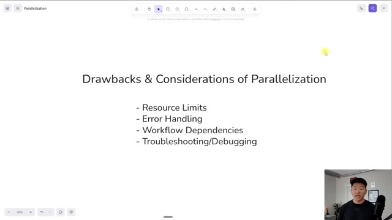
🔍 AgrandirVous ne pouvez pas traiter 100 éléments tous en parallèle. Une autre chose à penser serait la gestion des erreurs. Donc si vous exécutez 50 éléments en parallèle et que l'un d'eux génère une erreur, comment gérez-vous juste celui qui a eu une erreur ? Et que voulez-vous faire du reste d'entre eux ? Ou s'ils ont tous généré une erreur en même temps, comment les remettez-vous essentiellement en file d'attente ou traitez-vous ceux qui ont eu des erreurs ? Vous avez également des dépendances de flux de travail. Donc dans cet exemple, c'était tout à fait correct. Mais parfois, si vous avez un flux assez séquentiel où vous ne pouvez pas faire l'étape C tant que l'étape B n'est pas terminée, alors vous voulez que la logique ait réellement du sens afin que s'il y a des dépendances, vous soyez toujours bon et enfin, un peu similaire au numéro deux, c'est le dépannage et le débogage.
Interface & Outils : Logiciel de présentation ou tableau blanc en ligne (type Canvas).
Contenu textuel & Code : Texte : "Drawbacks & Considerations of Parallelization", suivi de quatre points : Resource Limits, Error Handling, Workflow Dependencies, Troubleshooting/Debugging.
Action / Démonstration : Le présentateur aborde et détaille les points clés liés aux limites et défis de la parallélisation, en particulier la gestion des erreurs.
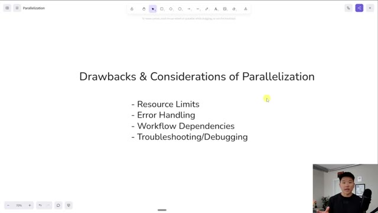
🔍 AgrandirTout simplement parce que si vous avez 50 éléments qui s'exécutent sous forme de 50 exécutions différentes, vous devrez en quelque sorte être capable de trouver les bonnes exécutions lorsque vous devez apporter des modifications, et là, j'essaye juste de vous lancer quelques points de haut niveau. Si vous voulez voir ce document que j'ai compilé et qui contient beaucoup plus de détails sur les sous-flux de travail et la parallélisation et des choses de ce genre, alors allez absolument voir ma communauté gratuite. Je mettrai le lien dans la publication associée à cette vidéo. Dans la communauté gratuite, vous pouvez également obtenir ce modèle si vous voulez juste faire joujou avec un peu. Et tout ce que vous avez à faire, c'est de venir ici, de chercher des ressources YouTube, ou de chercher le titre de la vidéo ici en haut dans la barre de recherche. Et genre, disons que c'était le
Interface & Outils : Interface web de conception de workflow (type Langflow ou plateforme similaire).
Contenu textuel & Code : Blocs fonctionnels titrés "Research done in parallel" (Perplexity Research) et "Analysis NOT done in parallel" (Tool Analysis Agent, 4.1-mini, Update Tool).
Action / Démonstration : Visualisation et explication de l'architecture d'un workflow d'IA combinant des tâches parallèles et séquentielles.
vidéo que vous regardez en ce moment même. Il y aura le PDF de ce document dont je parle, et puis aussi un fichier JSON pour le flux de travail. Donc le lien pour la communauté gratuite est en bas dans la description. D'accord, donc voilà pour les inconvénients et les considérations de la parallélisation. Et donc clairement, vous ne voulez pas toujours opter directement pour la parallélisation, mais il est vraiment important de comprendre qu'il faut quand même utiliser des sous-flux, car les sous-flux sont vraiment précieux. Voici donc quatre raisons du pourquoi et du quand les diviser en sous-flux. La première est la logique répétée.
Interface & Outils : Interface de présentation / Diapositive de cours
Contenu textuel & Code : Texte de la diapositive : "Why & When to Break Up Workflows" avec des points sur la logique répétée, la complexité, le traitement parallèle et la gestion des erreurs.
Action / Démonstration : Le présentateur explique les concepts théoriques et les considérations pour structurer et diviser les workflows d'automatisation.
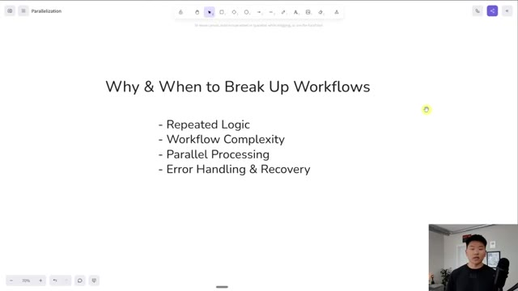
🔍 AgrandirUne chose cool avec n8n, c'est qu'on peut construire ces composants réutilisables. Et un composant réutilisable, un peu comme celui-ci, où nous allons passer quelque chose à rechercher puis un agent pour l'analyser, ce sous-flux peut être relié à 100 workflows. Ça n'a pas d'importance. Il peut être relié à autant qu'on le souhaite. Et donc si nous savons que nous créons quelque chose qui a une logique répétée ou qui pourrait être réutilisé, si nous l'emballons sous forme de sous-workflow, nous pouvons alors l'appeler depuis tous ces différents endroits. Et si nous avons un jour besoin d'y aller et de changer un modèle ou de changer la requête HTTP ou de changer le prompt, nous pouvons simplement le faire en un seul endroit plutôt que d'avoir à le changer dans 100 endroits différents si nous l'avions relié à 100 workflows différents. Nous avons aussi un workflow
Interface & Outils : n8n et un outil de présentation de diapositives.
Contenu textuel & Code : Diagramme de nœuds n8n (Start, Perplexity Research, Tool Analysis Agent, 4.1-mini, Output, Update Tool) et liste à puces sur le découpage des workflows.
Action / Démonstration : Le présentateur explique l'architecture d'un composant réutilisable dans un sous-flux n8n et les critères pour diviser les workflows.
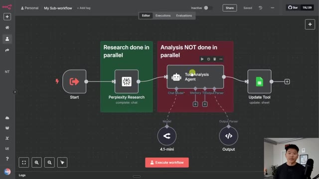
🔍 Agrandir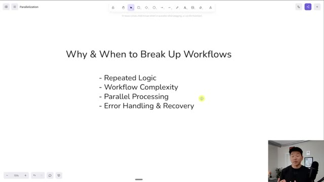
🔍 Agrandircomplexité. Donc si votre flux de travail devient vraiment volumineux et que vous voulez simplement le nettoyer en quelque sorte en fonction de différents modules, c'est une très bonne idée de le diviser simplement en sous-flux de travail, surtout avec la facilité qu'il y a maintenant à simplement surligner quelque chose et à le convertir en sous-flux. Surtout si vous n'êtes pas le seul à travailler sur un flux de travail, car alors vous avez toute cette question d'hygiène du flux de travail et tout peut être étiqueté et cela aura beaucoup plus de sens pour quelqu'un d'autre qui doit intervenir pour le déboguer ou l'améliorer, peu importe ce que c'est. Évidemment, nous avons le traitement parallèle, dont nous venons de parler. Et ensuite, nous avons la gestion des erreurs et la récupération. Donc, vous pouvez peut-être faire en sorte que les choses aillent toujours dans un sous-flux de travail s'il y a eu une erreur et ensuite cela peut simplement gérer cela.
Interface & Outils : Logiciel de présentation ou outil de tableau blanc numérique.
Contenu textuel & Code : Texte listant : 'Why & When to Break Up Workflows', 'Repeated Logic', 'Workflow Complexity', 'Parallel Processing', 'Error Handling & Recovery'.
Action / Démonstration : Le présentateur explique les critères de division des workflows d'automatisation.
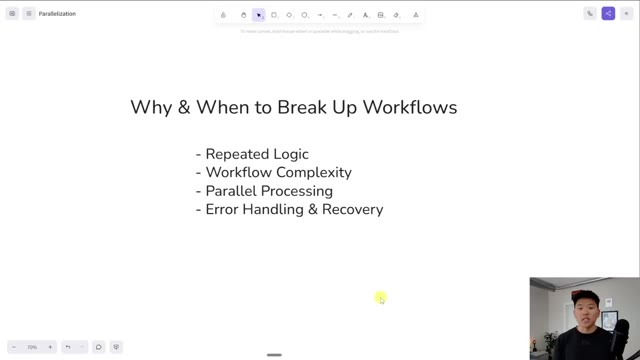
🔍 Agrandirtoutes les notifications et tout ce dont vous avez besoin de faire. Mais c'est aussi beaucoup plus facile de voir quelles sections de votre flux de travail rencontrent des erreurs si vous séparez les différents composants dans des flux différents, et ensuite vous pouvez simplement comprendre, d'accord, vous savez, cette section de recherche de votre flux de travail échoue beaucoup plus que la section de manipulation des données, et maintenant vous savez un peu plus rapidement sur quoi vous devez travailler et ce que vous devez affiner. Cela aide simplement à garder tout bien divisé, séparé, et vraiment propre et organisé. Mais encore une fois, vous pouvez approfondir un peu plus la division des flux de travail dans ce document que j'ai préparé pour vous les gars.
Interface & Outils : Outil de tableau blanc numérique ou logiciel de présentation (type Miro ou Canva).
Contenu textuel & Code : Titre : "Why & When to Break Up Workflows". Liste à puces : "- Repeated Logic", "- Workflow Complexity", "- Parallel Processing", "- Error Handling & Recovery".
Action / Démonstration : Présentation pédagogique illustrant les principes théoriques de l'automatisation.
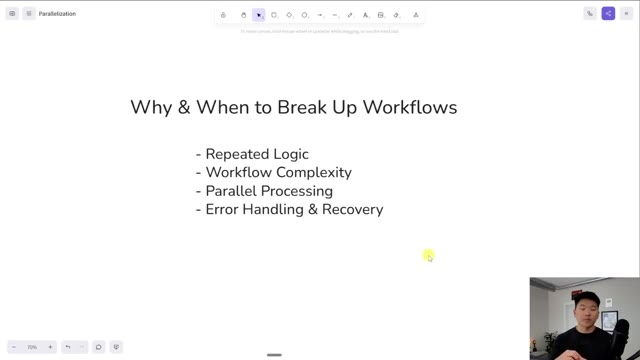
🔍 AgrandirEt juste pour vous montrer un tout dernier exemple rapide de la façon dont ce nœud fonctionne, disons que nous avons ce flux, qui ressemblait un peu à ça, et nous décidons, d'accord, cette section ici va être un composant réutilisable vraiment idéal. Donc nous allons transformer cela en sous-flux, ce que nous avons fait ici. Mais disons que nous atteignons des limites de taux sur notre nœud Google Sheet ou notre nœud Perplexity. Donc nous ne voulons pas les traiter en parallèle, mais nous voulons quand même conserver ce sous-flux de travail pour l'épurer. Mais tout ce que nous aurions à faire, c'est que nous pourrions venir dans notre flux de travail principal, nous pourrions cliquer ici, et ensuite nous pourrions simplement activer ceci, qui indique d'attendre la fin du sous-flux de travail.
Interface & Outils : Interface web de construction de workflows par glisser-déposer (type n8n ou outil similaire).
Contenu textuel & Code : Un flux de travail nommé "Tool Research Loop" comprenant plusieurs nœuds reliés entre eux pour automatiser des recherches et des analyses d'outils.
Action / Démonstration : Visualisation d'un flux de travail complexe montrant comment regrouper ou analyser des sections pour créer des composants réutilisables.
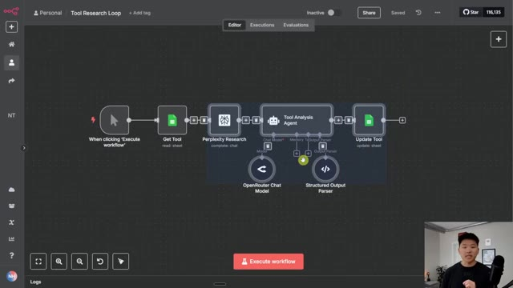
🔍 AgrandirEt ça fait fondamentalement la même chose que si nous avions ajouté une boucle ici et que nous étions simplement en train de traiter ces quatre éléments un par un. Donc, juste pour vous montrer, je vais aller ici et je vais effacer les données. Je vais définir tous ces statuts sur « prêt » pour qu'ils soient réellement pris en compte dans l'automatisation. Et ensuite, nous reviendrons ici. Je vais cliquer sur « enregistrer », puis je vais exécuter ce flux de travail.
Interface & Outils : Outil de workflow visuel et Google Sheets.
Contenu textuel & Code : Nœuds de workflow connectés et tableau de données de recherche avec des statuts « Processed ».
Action / Démonstration : Le présentateur montre le diagramme de workflow puis bascule vers Google Sheets pour expliquer la structure des données traitées.
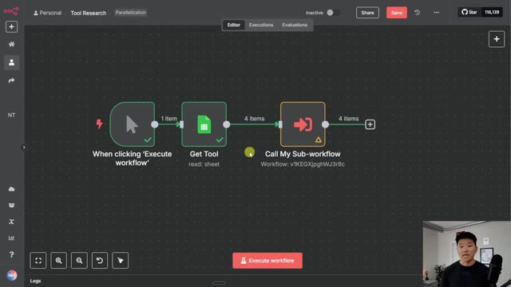
🔍 Agrandir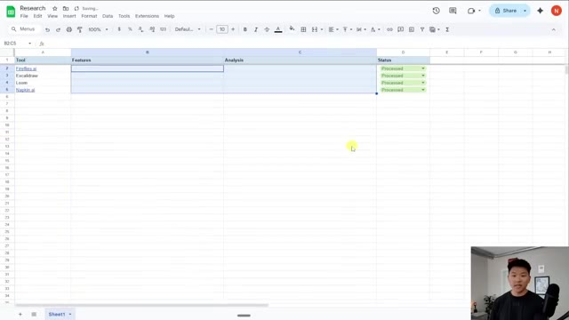
🔍 AgrandirÇa va envoyer les quatre ici, mais vous allez voir que ça va les traiter un par un. Donc si je vais dans le sous-flux lui-même et que je clique dans les exécutions, vous pouvez voir que nous en avons juste un qui s'exécute en ce moment. C'est tout. Une fois que celui-ci aura terminé, il va alors se déclencher et lancer le deuxième. J'espère donc que vous pouvez voir comment cela transforme fondamentalement tout cela en lots de un et les envoie simplement un par un.
Interface & Outils : Interface web de gestion de workflows et d'agents IA (type plateforme d'automatisation visuelle).
Contenu textuel & Code : Noms des blocs du workflow : 'Research done in parallel', 'Analysis NOT done in parallel', 'Tool Analysis Agent', 'Update Tool'.
Action / Démonstration : Navigation de l'éditeur de workflow vers l'onglet des exécutions pour observer l'état d'exécution en temps réel.
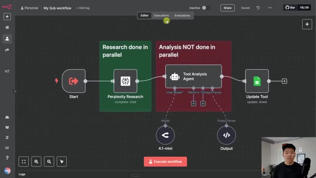
🔍 Agrandir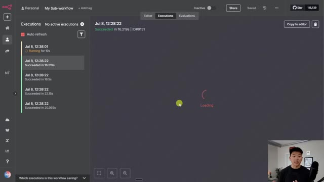
🔍 AgrandirVous pouvez donc voir que le premier vient juste de se terminer et maintenant il traite le deuxième. Cela va donc prendre environ 20 secondes pour chacun. Ça va donc prendre une minute, ce qui est une exécution beaucoup plus longue que de les faire tous se terminer en 20 secondes en même temps. Mais c'est un moyen de nous protéger contre l'atteinte de certaines limites de débit. Donc, si vous avez trouvé cette vidéo intéressante et que vous voulez approfondir différentes techniques d'automatisation un peu plus avancées, alors jetez définitivement un œil à ma communauté payante.
Interface & Outils : n8n (Interface web de gestion de workflows et d'automatisation)
Contenu textuel & Code : Historique des exécutions dans le panneau de gauche avec des durées (ex: 19.859s, 16.219s) et diagramme de workflow avec des nœuds de recherche et d'analyse.
Action / Démonstration : Visualisation et suivi en direct de l'exécution séquentielle ou parallèle des différentes étapes du workflow d'automatisation.
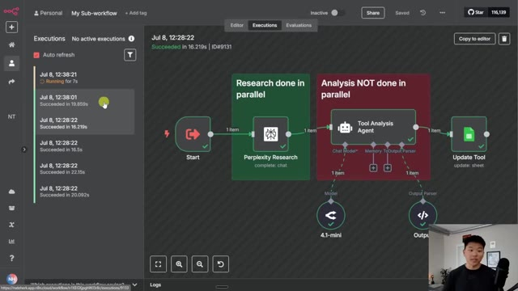
🔍 AgrandirLe lien pour cela se trouve dans la description. Nous avons une super communauté de membres qui créent avec N8N chaque jour, qui partagent toujours leurs ressources et partagent les défis auxquels ils font face. Nous avons deux formations complètes ici. L'une s'appelle Agent Zero, ce qui est parfait pour les débutants. C'est comme les bases de l'automatisation par IA. Et ensuite, vous passez de cela à 10 heures en 10 secondes, où vous apprenez à identifier, concevoir et créer des automatisations qui font gagner du temps.
Interface & Outils : Navigateur web affichant la plateforme communautaire Skool (AI Automation Society Plus).
Contenu textuel & Code : Publications de membres, fils de discussion et vignettes des modules de formation ("Start Here", "Agent Zero", "10 Hours to 10 Seconds", "n8n Templates", etc.).
Action / Démonstration : Navigation sur la plateforme de la communauté pour présenter les ressources et les formations disponibles.
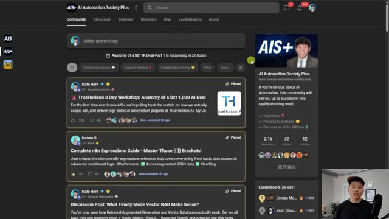
🔍 Agrandir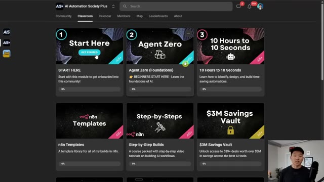
🔍 AgrandirDonc si tout cela vous intrigue et que vous voulez être entouré de plus de 2000 personnes partageant les mêmes idées, alors allez absolument jeter un œil à la communauté. Et j'ai pu faire toute cette promo pour School pendant que cela tournait encore de manière séquentielle, ce qui montre bien à quel point il est plus rapide de faire du parallèle. Bref, ça va être tout pour celui-ci les gars. Si vous avez apprécié la vidéo ou appris quelque chose de nouveau, veuillez lui donner un pouce bleu. Ça m'aide vraiment énormément. Et comme toujours, je vous remercie d'être arrivés jusqu'à la fin de la vidéo.
Interface & Outils : Plateforme Skool (Image 1) et interface d'automatisation/workflow de type n8n (Image 2).
Contenu textuel & Code : Publications de communauté sur l'automatisation IA (Image 1) et diagramme de workflow séquentiel avec des appels de sous-workflows (Image 2).
Action / Démonstration : Présentation de la communauté Skool puis affichage d'un workflow d'automatisation séquentiel.
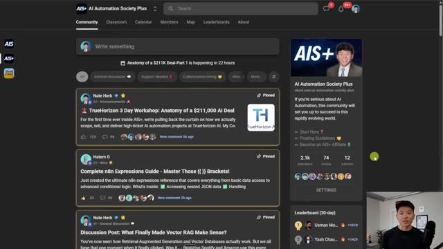
🔍 AgrandirJe vous vois dans la prochaine. Merci, les gars.
Interface & Outils : n8n (Interface graphique de workflow)
Contenu textuel & Code : Nœuds connectés : 'When clicking 'Execute workflow'', 'Get Tool' (read: sheet), et 'Call My Sub-workflow' (Workflow: v1KEGXJpg hWJ3r8c).
Action / Démonstration : Affichage du diagramme de workflow complet avant la fin de la vidéo.
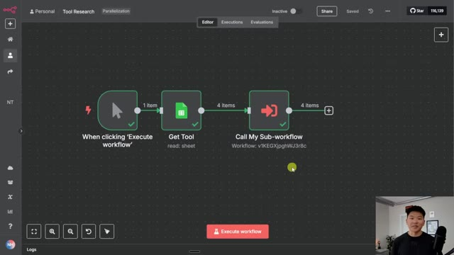
🔍 Agrandir